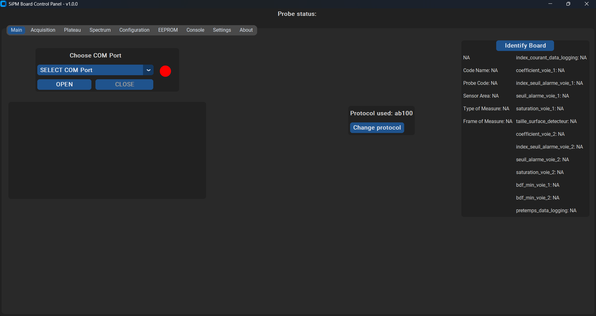

Pro
SIPM
Application industrielle — Mirion Technologies
Application de supervision et de gestion pour sondes de détection. J'ai amélioré les performances, ajouté la gestion d'onglets et de fichiers, et repensé l'interface pour la rendre plus intuitive.
Code privé — projet professionnel